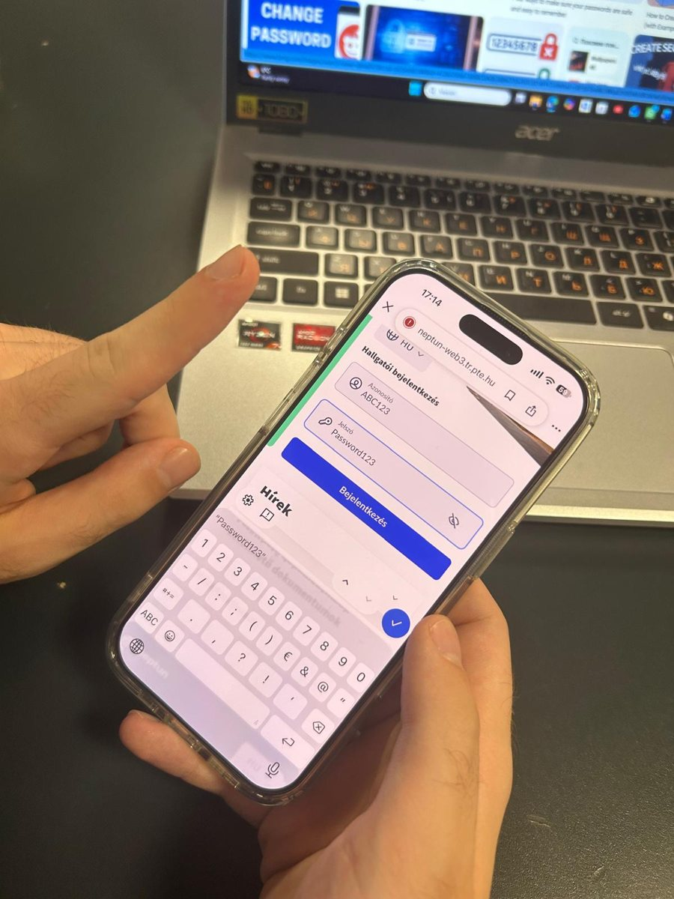

01 · Story
One password,five doors.
Tom was 14 and had one password for everything: tom2011. His name and his birth year. Easy to remember. Same for his games, his email and his Instagram.
One Monday, a small gaming site he had forgotten about got hacked. The hackers didn’t care about the game. They took the list of emails and passwords and tried them everywhere else.
By Tuesday, someone else was logged in as Tom. His friends got messages from “him” asking for gift card codes. His email password was changed. He couldn’t get back in.
Tom’s mistake wasn’t one weak password. It was one key for five doors. When a thief copies that key, every door opens.
It took Tom a week, and a lot of help, to get his accounts back. Then he did what the rest of this page explains. Now one leak can only ever open one door.
